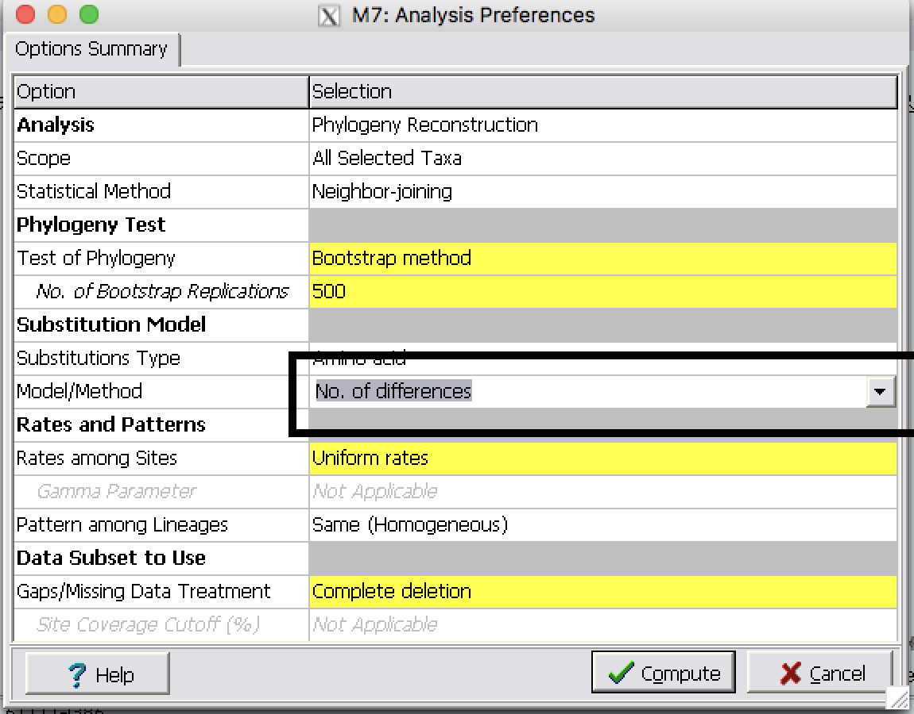
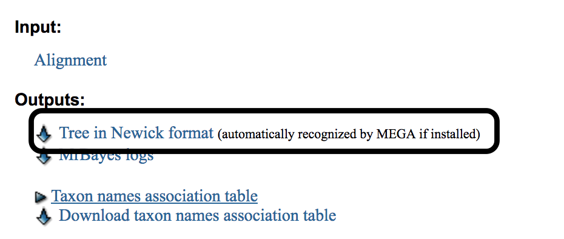
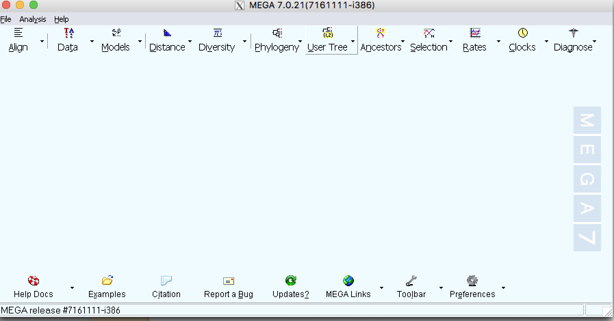

Steps of building a tree (Part II)¶
Make multiple sequence alignment for Globin gene family¶
| Step 1: | Download globin.fasta from Blackboard and perform a MSA using MUSCLE (follow the steps we discussed last week). |
|---|---|
| Step 2: | Examine the alignment to make sure it is correct and no additional editing is needed. |
| Step 3: | Export the alignment as a fasta format file on your Desktop. Name it as globin_align |
Find the best substitution model¶
| Step 1: | Calculate the distance using different substitution models :a: Select Distance and then Compute Pairwise distance :b: Calculate distance using the following methods
|
|---|

| Step 2: | Use the same alignment file and build three NJ trees using different substitution models:
|
|---|

| Step 3: | Best model based on ProtTest |
|---|
Building Phylogenetic trees¶
| Step 1: | Click on Phylogeny |
|---|

| Step 2: | Make Neighbor-Joining tree with Bootstrap 500 replicates
|
|---|

| Step 3: | Save the tree as a pdf file by clicking on Image button |
|---|
| Step 4: | Build a tree using Parsimony method with 50 Bootstrap replicates (500 will be very slow).
|
|---|
| Step 5: | Bayesian inference of phylogeny |
|---|
Follow this link to MrBayes online server
A: Use the same alignment file B: In MrBayes select Poisson amino acid model with equal rates of substitution.
C: Select prior parameters (e.g. equal, fixed frequencies for the states; equal probability for all topologies; unconstrained branch lengths). D: Run 1,000,000 trials for Monte Carlo Markov Chain estimation of the posterior distribution. E: Obtain phylogram F: Export tree files G: View in MEGA software

